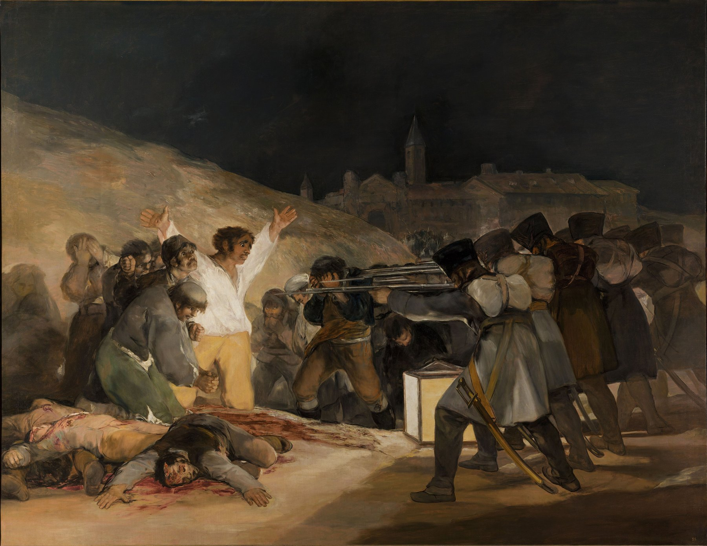
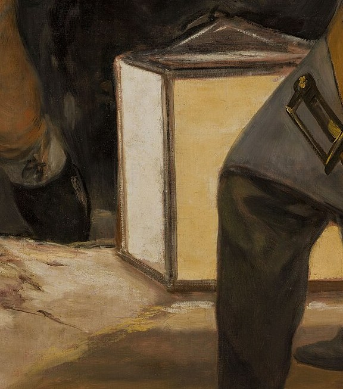
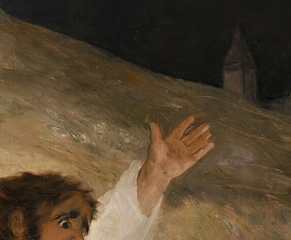
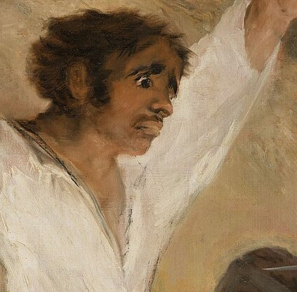
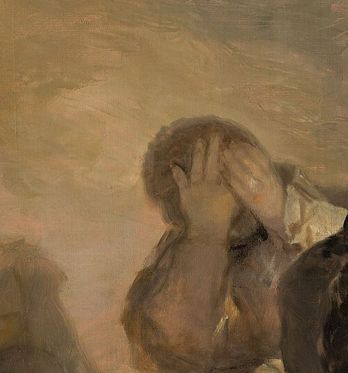
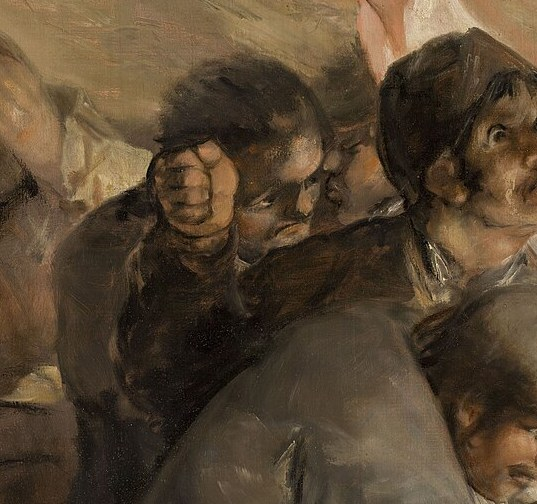
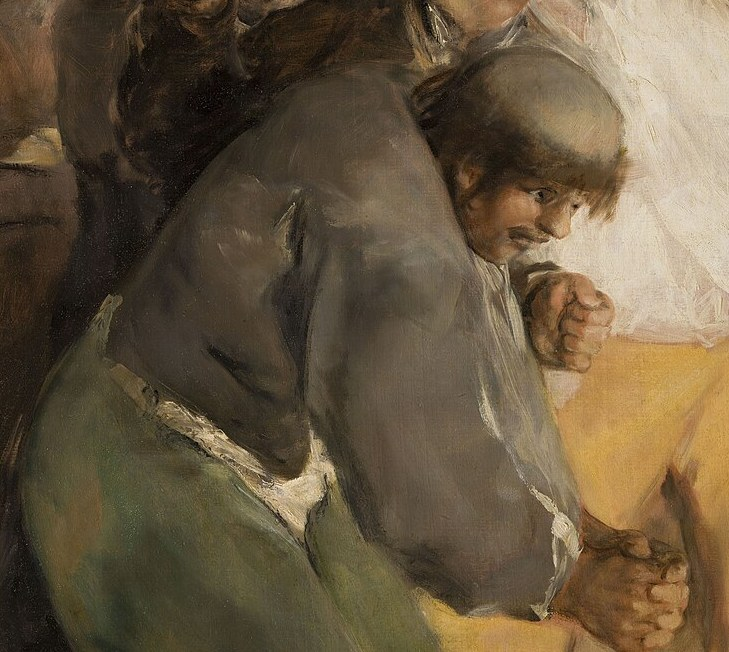
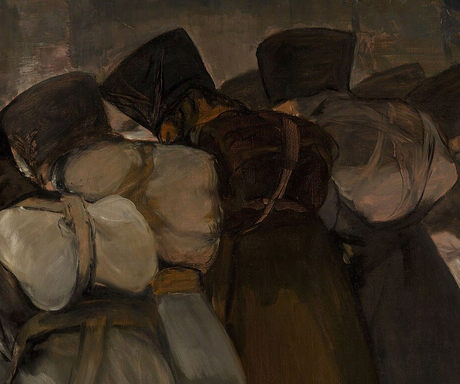
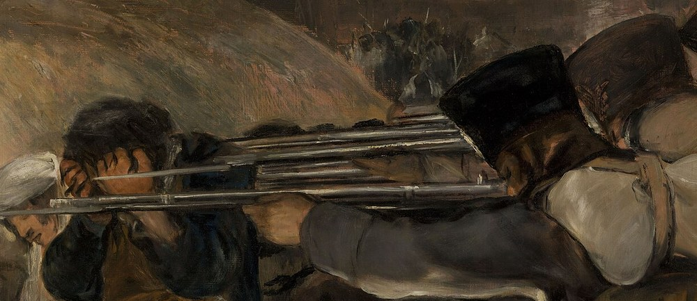
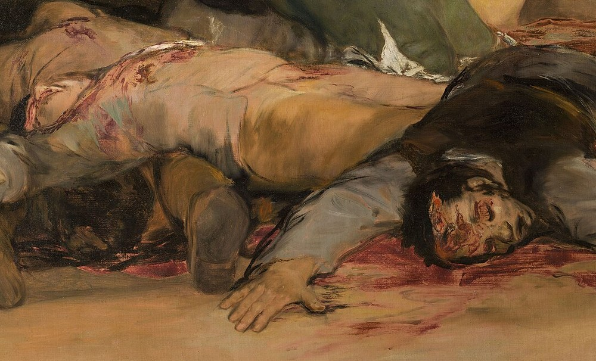

1808 年的马德里有过两个日子：5 月 2 日，人们拿起刀子和剪刀冲向占领军；5 月 3 日凌晨，法军在山坡下架起行刑队，把抓到的人一批批枪决。戈雅把这两天分别画了下来。
1808 年 5 月 2 日中午，马德里的太阳门广场爆发了反抗拿破仑军队的起义。抵抗者不是士兵——是屠夫、学徒、仆役和邻居，手里握着厨房里的刀具和随手抓到的木棍，冲向拿破仑精锐的马穆鲁克骑兵。巷战持续了整个下午，血流在石板路上。傍晚，法军指挥官下令全城搜捕，抓走了数百人。
第二天，也就是 5 月 3 日凌晨，俘虏被分批押到城外的蒙克洛亚山坡。那里有一座兵营、一处山坡、几栋远远的房屋——选在城外行刑，是为了不让城里的人看见。法军架起行刑队，一批人倒下，下一批人再站过来。天开始亮的时候，山坡下的尸体已经堆了好几层。
六年之后，1814 年，法军撤走、费尔南多七世复辟。戈雅向摄政政府递交了一份申请：他要为「我们国家反抗欧洲暴君的光荣起义」画两幅大画。政府同意了，给了他画布和资助。这一年戈雅 68 岁，几乎完全失聪。他画完了一幅《5月2日》，和一幅《5月3日》。前一幅画白天的暴动，后一幅画凌晨的枪响——而正是后面这一幅，把「战争画」这门古老的手艺，从歌颂改成了控诉：此前所有的战争画都在画胜利者，戈雅第一次把画面正中的位置，让给了即将被杀死的人。
—— 戈雅 1814 年 2 月致西班牙摄政政府的申请（据西文转译，措辞因译本而异）
在本页左下角，可以点亮一首与这场战争同龄的曲子。
从右往左：枪口一步一步逼近，被处决的人一个一个倒下，只有正中那件白衬衫还站着。

点击画面中的 ✦ 光点 查看画面细节 · 图片为公有领域高清复制品，可自由欣赏
这两幅画是成对的：一幅画中午的暴动，一幅画凌晨的枪响。摆在普拉多博物馆里，它们从不分开。
1808.5.2 · 太阳门广场
5 月 2 日中午，马德里人冲向拿破仑的马穆鲁克骑兵。戈雅在《5月2日》里画下了这个瞬间：他的构图几乎没有中心，画面被撕成几块，人、马、刀光混作一团。与其说这是一场战斗，不如说是一场失控——这是「起义」这个词在画布上最混乱也最诚实的样子。当天傍晚，法军开始全城搜捕。
➤1808.5.3 · 蒙克洛亚山坡
第二天凌晨，俘虏被分批押到城外。与前一日的混乱相反，《5月3日》的构图是极端对称的：右侧是整齐的行刑队，左侧是散乱的人群，正中是一盏灯笼和一件白衬衫。戈雅用一天之内的两幅画，把「暴动的混乱」与「处决的秩序」摆在一起——后者显然更可怕。
➤1814 · 戈雅的画室
1814 年，法军已经撤走，费尔南多七世复辟。戈雅主动向摄政政府申请：要为这场起义留下纪念。这一年他 68 岁，失聪多年，靠手语和纸笔与人交谈。他画完这两幅大画，政府收下并付了稿酬——但它们并没有被挂到任何公共的墙上，而是进了仓库，很久以后才被真正看见。

真事一 · 画它的人听不见。1792 年，戈雅在 46 岁那年得了一场重病，之后彻底失聪，此后三十多年只能靠手语、纸笔与人交流。画《5月3日》时他 68 岁。有研究者提出：失聪让他对「表情」与「姿态」的依赖远超过同时代人——他必须把恐惧、绝望、麻木全部翻译成可见的形状，因为他无法从声音里得到任何信息。这幅画里那九张各自不同的脸，或许正是这种「只能看」的产物。
真事二 · 那些姿势有出处，而且是现成的。画中「双臂张开的死者」与「高举双臂的白衣人」，在姿态上与基督教「钉十字架」的图式高度接近；有研究者认为这不是巧合，而是戈雅刻意调用了一套所有西班牙人都认得的视觉语言：他让被枪杀的马德里市民，接上了受难基督的位置。另有文献显示戈雅与死难者的家庭有往来——他把一场还带着体温的当代事件，画成了一张人人都读得懂的「圣像」。
真事三 · 它当年并没有被挂起来。1814 年，戈雅把画呈交上去，政府收下、付款，但两幅画没有被安排在任何公共空间展出，而是长期存放在库房里，后来才进入皇家收藏，再辗转成为普拉多博物馆的镇馆之作。原因不难猜：画面里没有胜利，没有英雄，没有旗帜。在那个人人都在庆祝「反抗欧洲暴君」的年代，戈雅交出的是一份关于失败与死亡的记录——太早了，也太黑了。
※ 画面细节的多种解读（行刑队的排数与人数、背景建筑的归属、戈雅是否亲历现场）在艺术史学界仍有不同意见，此处采较通行的说法；引文据译本转译，措辞或因语种而异。
九个将死的人、一排没有脸的士兵、一盏放在地上的灯笼——戈雅把它画成了一面照向观看者的镜子。

全画的光都打在这双手上。它是构图轴心，也是唯一的「回答」——面对枪口，人只能举起手。

怕死，也知道自己会死。戈雅拒绝把他的表情修得体面——这是这幅画最现代的一笔。

不看、不听、不动。人群中有人反抗，也有人先一步在精神上倒下了。戈雅两种都画。

画面里没有教会、没有十字架、没有圣徒，宗教只剩下一个出于本能的动作。

他弯着腰，却把脸转向画外。全画只有他在看观看者——被处决的人反过来审视看画的人。

整齐、低头、动作一致，一个脸都没有。戈雅没有画「哪个敌人」，他画「一种可以复制的动作」。

几条平行的水平线，把所有枪口收向一个胸口。全画所有的斜线，最终都终结在这里。

被放在画面最下缘、离观看者最近的位置。你站的地方，就是行刑的地方。
在《5月3日》之前，战争画的主角是将军、旗帜和凯旋门，构图的任务是把胜利讲得漂亮。戈雅把镜头整个调转过来，对准了失败者、无名者和即将被枪杀的人。他没有发表任何宣言，只是把画面的中心从「谁赢了」换成了「谁死了」——这个动作比它同时代的一切艺术理论都更激进。
戈雅放弃了古典绘画的「理想化」：待决者的脸扭曲变形，士兵的姿态并不英武（有研究者注意到，那只正在瞄准的手画得并不稳），地上一片狼藉，颜色只剩土黄、褐灰和一点血红。后来库尔贝、马奈、毕加索所做的一切「把真实画进画里」，都能在这幅画里找到预演。它比摄影术的发明只早了十几年。
一百二十三年后，毕加索画《格尔尼卡》，几乎重演了戈雅的每一个决定：不给敌人画脸（《格尔尼卡》里没有一个德国人或意大利人）、剔除大部分色彩（戈雅也几乎只用土黄与灰白）、把最亮的光留给受害者。艺术史常把这两幅画并列为西班牙绘画的两座反战纪念碑：戈雅画枪毙，毕加索画轰炸——从步枪到炸弹，正好一步跨进二十世纪。
第一个是「谁有资格画暴力」：戈雅是目击者还是二手转述？如果他并未亲临现场，他画的是记忆、是想象，还是他替死者做的一次代言？第二个是「把受难画得如此动人，会不会消费了受难」：当观者为一幅画里的死亡屏住呼吸，那种震动里有多少是同情，有多少是审美快感？这两个问题今天仍在争论——而它们本身就是这幅画的一部分。
马德里人起义反抗拿破仑军队，太阳门广场爆发巷战；法军当日开始全城搜捕。
俘虏被分批押到城外蒙克洛亚山坡处决。戈雅时年 62 岁，住在马德里。
法军撤离、费尔南多七世复辟后，戈雅主动向摄政政府申请绘制这两幅纪念画，同年完成《5月2日》与《5月3日》。
戈雅把自己关进城外的「聋人别墅」，在墙上直接画下十四幅《黑色绘画》——暴力与恐惧的主题又持续了十年。
毕加索以《格尔尼卡》回应戈雅；两幅戈雅现存马德里普拉多博物馆，成为西班牙绘画的两座反战纪念碑。